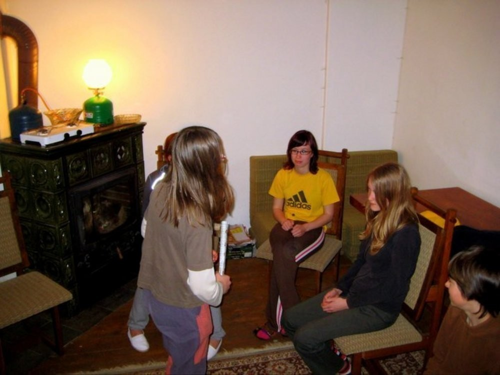
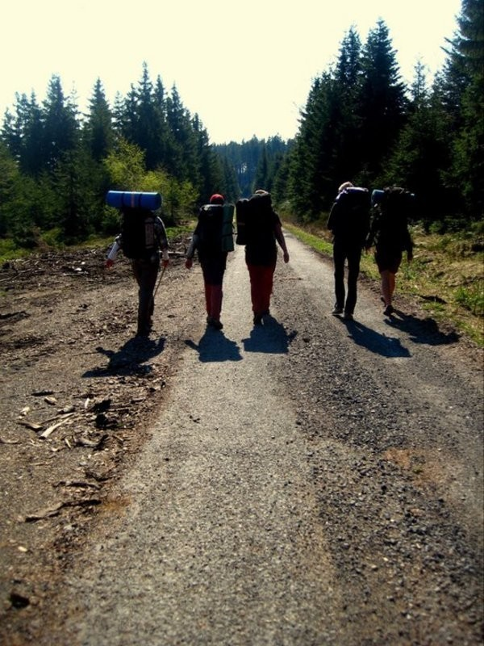

Píše se rok 2011, zima, přes veškerá prvotní očekávání mírná, už za okny pomalu mizí. My sedíme k večeru kolem stolů v bývalé hájovně na Zlaté Studně. Týden, který jsme tu trávili, se chýlí ke svému konci. Nám to ještě nedochází, asi tak jako trvá dlouho pochopit, že léto je pryč a přes podzim sem již nakukuje zima.
Pomalu se rozjíždíme do svých domovů. Se vzpomínkou na srdci, se šrámy na těle. Na měsíc, měsíc a pár týdnů nás to zase vyplivlo do života školy, povinností, zbytečností a starostí.
V tu dobu se již ale pomalu rozhýbává mohutné soukolí. Velikonoce jsou na dosah a s přípravou mise do neprozkoumaných zákoutí pomáhá polovina Šumavy.

A opravdu to bylo tak. Z jistých tradičních důvodů připadlo zorganizování velikonoční výpravy zase na mne. Pokud naši historii trochu sledujete, možná si i pamatujete počty lidí na předchozích velikonočních výletech.
Úplně první se udál roku 2008. Tenkrát jsme do sněhu a nepohody vyrazili čtyři. O rok později nás jelo o jednoho víc. A loni jsme byli opět ve čtyřech. To jen abyste pochopili nemalý rozdíl mezi organizováním předchozích výprav a té letošní. Letos nás totiž jelo jedenáct.
Ale vezmu to od začátku. Krátce po skončení Zlaté Studny mi napsala Jáňa. Kromě toho, že jsme zhodnotili a zanalyzovali skončivší akci, jsme začali osnovat i plány na Velikonoce. Jáňa poznamenala, že Luboš Novotný ví o nějaké chatce na Šumavě a navrhla toho využít.
A tak slovo dalo slovo, párkrát jsme si s Lubošem zavolali a on dokázal sehnat klíče od dvou chatek. A protože mne velice zajímalo, jak vypadají a taky jsem nechtěl někam jen tak jet naslepo, vyrazil jsem se na ně podívat.

Šel jsem ještě s Ondrou a Vojtou a během celodenního pochodu jsme je zvládli obejít. Zjistili jsme, že první z nich, Hrabůvka, je na nás až příliš luxusní, ale na krásném místě. Druhá byla kousek od jezera Laka a byla dost malá, ne tolik luxusní, ale s jistým osobitým kouzlem.
Volba tedy padla na tu první. Pomalu jsem začal obesílat pozvánky všem možným lidem, kteří s námi buď byli na Zlaté Studně nebo někdy před tím nebo nám prostě padli do oka a my si na ně vzpomněli.
Vidina krásné chaty asi zabrala a jak už jsem psal, jelo nakonec jedenáct lidí. Kromě starých ostřílených Tchořů - mne, Jáni, Bětky a Kláry a těch už také dost ostřílených Sváti, Áni S., Ondry a Vojty s námi poprvé jel Jéňa Vaňkát a Áňa Štrunců a pokud mne paměť neklame, tak byla poprvé i Bláňa Spěváčků.
Den první
Doprava na chatu probíhala ve dvou skupinách. Já vedl tu, která to měla blíž přes Špičák, Jáňa vedla partu z Horažďovicka. Slíbila, že taky něco napíše, tak se snad dozvíte i jak probíhala jejich cesta.
My vyšli od Novotných ze Špičáku, přesně podle plánu, těsně po osmé. Vystoupali jsme až na Pancíř. Tam jsme našli kešku, kterou se nám nepodařilo najít, když jsme tam byli posledně. Cestu jsme už znali, od Tomandlova křížku po vrstevnici a přímo, přes bažinky a potůčky, až na chatu.
Asi půlhodinky jsme si tam hráli s kohoutky a uzávěry, než konečně začala téct na chatě voda a my mohli dát vařit čaj. Jen co se nám to povedlo, dorazila i druhá skupina a všichni jsme se začali postupně na chatě zabydlovat. Holky se zmáčkly do většího pokoje, kluci měli dost prostoru ve druhém.
Mám takové tušení, že jsme dali lehký oběd a vyrazili na průzkum. Kláře, která neměla dost sil a povolení od doktora na chození s námi, jsme svěřili hlídání chaty a vaření večeře. Sami jsme se vydali směrem ke třetí chatě. Od té jsme klíčky neměli - je totiž už určená ke zbourání a ani se do ní příliš nesmí. Což je celkem škoda, ze všech těchto chatek je úplně na nejhezčím místě.
Pak jsme to švihli přes kopec Sup na kopec Javorná. Cestou jsme hráli tu hru, jak jeden má píšťalku a když zapíská, ostatní se musí co nejrychleji poschovávat a vydrželo nám to až na samotný vrchol.
Tam jsme objevili "Knihu návštěv", což na takovém malém kopci celkem překvapí. Samozřejmě jsme se náležitě podepsali a pokud někdy na tento kopec zavítáte, určitě si náš záznam dohledejte. Je ze čtvrtka 21. dubna 2011.
Cestou zpátky jsme pocítili to, že jsme si nevzali žádné pití ani svačinu. Slabší jedinci začali okusovat lišejníky, žvýkat kořínky a podobné věci. Ti silnější jenom začali básnit o jídle, jak bývá zvykem. Když se nám podařilo natrefit na potůček, nikdo si nedělal starosti o své zažívání a všichni si vychutnali pramenitou vodu Šumavy.
Po návratu do chaty jsme vytáhli stolek ven a opekli si párky nad ohněm. Hrály se také Aktivity. Ukazování, popisování a kreslení všeho možného i nemožného.
Pak zašlo slunko, začala být zima a my se stáhli dovnitř. Hráli jsme ověřené hry - zvířata a vraha. Vrah je klasika, zvířátka už se také pomalu ohrála, navíc jsme byli unaveni čerstvým povětřím a tak jsme šli docela brzo spát.
Druhý den
Jak jinak začít, než rozcvičkou a dobrou snídaní, že? Mám za to, že byly chleby s něčím nahoru. Tento den nás čekal velký výlet. Sice jsme neměli úplně jasno kudy půjdeme, zato jsme měli jasno, kam chceme dojít - na Polom.
Zamávali jsme Kláře a přes vysoce chráněné oblasti to napálili přímo na Gerlovu Huť. Pak jsme chvilku šli po značených trasách, za zatáčkou jsme ale opět vskočili do lesa a začali se prodírat na první vrchol - Tok (1 023).
Oklepali jsme větvičky, které se na nás nachytali při průchodu solidním hustníkem a začali zase zbíhat dolů. Tentokrát se nám podařilo natrefit na jakýsi průsek a až na asfaltku se celkem dalo jít.

Měli jsme namířeno na Sklářský vrch (1 195). Vzali jsme to proto opět lesem vzhůru, tentokrát byl naštěstí pěkně vzrostlý. Až na konci se to pokazilo, a tak jsme tento vrchol jenom obešli a pustili se rovnou na Polom (1 295).
A na Polom je stoupání opravdu pěkné. Ale ten výhled z něj… Chvilku jsme se váleli na měkké trávě a užívali si pocit zdárného dobytí. Pak jsme sešli k odpočívadlu Nad Polomem (celou dobu jsem měl za to, že to bylo Pod Polomem, možná jenom jiná mapa…)
Protože jsme věděli, že budeme chodit po horách celý den, vzali jsme i plynovou bombu na uvaření polévky. Nesl jsem to já ve vypůjčeném batohu. Zhruba v tu dobu, kdy jsme scházeli z Polomu, mi došlo, že jsem zapomněl vzít sirky. Školácká chyba.

Byli jsme tedy bez polévky. Chleby, co jsme měli, byly už snědeny a v břiše začínalo pomalu kručet. Ani Jánina komunikace s projíždějícími Němci nebyla úspěšná, zapalovač neměli. A tak jsme byli o hladu.
Nějakou dobu jsme se váleli okolo odpočívadla, nahřívali se na rozpáleném asfaltu a spali. Pak nastal čas pro návrat. Tentokrát jsme to vzali po pěkných cestách, už žádné husté neprostupné lesy. V protékajícím potoku jsme doplnili vodu a zvesela si to vykračovali domů.
Od Gerlovky jsme nechtěli jít trapně stejnou cestou, jako jsme šli ráno. A tak jsme to vzali nejdříve směrem na Hoffmanky a pak hodně dlouho azimutem. Potkali jsme asi jen tři bažinky, dva potoky a jeden neprostupný hustník. Skoro pohodlnější než po cestě.

Večer jsme patrně opět hráli nějaké hry. Možná, že ten večer začaly holky mlátit hrníčky o stůl. Na FB kolovalo jeden čas video, malou představu můžete získat i z fotky.
Vůbec ten stůl si dost při naší návštěvě prožil. Když se do něj nemlátilo hrnky, tak se mlátilo rukama. Určitě jsme měli taky něco k večeři, ale to po mně nechtějte, možná to byla čočka, možná taky ne.
Když se setmělo, začali se hrát upíři. My máme rádi hry, při kterých se vzájemně mordujeme a upíři byli v tomhle skvělí. V zhasnutém baráku vás pár upírů se syčením nahání, škrtí a vy musíte bez hlesu padnout k zemi. Jakmile o vás zakopne nějaký normální člověk, zakřičí mrtvola, rozsvítí se a hra se přeruší. Samozřejmě jde o to, odhalit všechny upíry.
Veliká sranda je to i z toho důvodu, že se pohybujete v naprosté tmě a tak se občas stane, že potkáte zeď, kde byste ji rozhodně nečekali.
Po výletě jsme byli ale jaksepatří stahaní a tak netrvalo dlouho a všichni skončili ve svých postýlkách.
Třetí den
Tento den jsme měli celkem jasný úkol - musíme naštípat co nejvíce dřeva a tím si svůj pobyt zde zaplatit. Měli jsme připravené nařezané špalky, od těch malých a příjemných, po velké a nezdolné.
Jenže sekyrky jsme měli jen tři a to ke všemu pouze jednu pořádnou a tak to rozhodně nebyla práce pro všechny. Rozhodlo se, že kluci zůstanou na chatě a budou štípat, jen budou třísky odletovat.
Trochu problém byl program pro holky. Jen tak flákat se na chatě, to nejde. Naštěstí ale toužily po civilizaci a tak souhlasily s tím, že si udělají výlet do Rudy, dokoupí zásoby a hlavně sušenky.
Trochu jsem se divil jejich nadšení, na kterém se možná přičinilo i moje prohlášení, že za chvíli budou zpátky. A tak vyrazily.
Na chatě jsme mezitím štípali a štípali, užívali si sluníčka a odpočívali. Stihli jsme naštípat skoro všechno, málo toho nebylo.
Co se všechno přihodilo holkám na jejich cestě možná někdy odhalí Jáňa. Každopádně se za chvíli nevrátili. Nevrátili se ani na oběd. Vrátili se až k večeru, správně unaveny, ale se sušenkami v batohu. Ty byly nakonec už dlouho předem očekávány.
Večer jsme si opět dali nezbytnou dávku her a zábavy, co povídat.
Čtvrtý den
Čtvrtý den, den poslední. Byla neděle. Holky byly unavené po včerejším výletu a moc se jim nikde trajdat nechtělo. Zato kluci měli energie přespříliš a nutně potřebovali opustit chatu.
Nakonec jsme se všichni vypravili směrem na Suché studánky. To byl vytoužený Ondrův cíl, protože se tam kdesi v ruinách starého statku měla skrývat keška1.
Vycházkovým krokem jsme se dostali až k rozcestí Na Suchých studánkách. Pěkné místo na kopci, vidí se z něj daleko. A hluboko pod kopcem ležely ony Suché studánky. Holkám se to pochopitelně sbíhat nechtělo a tak se samy vydaly směrem na hřebenovku a na Pancíř.
My kluci si to doslova seběhli dolů a jali se hledat. Ruin jsme tam našli dost, ale kešku žádnou. Po chvíli jsme usoudili, že je to marné a začali opět stoupat tím krpálem vzhůru. Bylo krásně, na duben celkem horko, vidět bylo široko do kraje.
Kousek za rozcestím Na suchých studánkách, na tom rozcestí, jak jsme se rozdělili, stála kaplička. Kupodivu byla odemčená. Mezitím, co jsme prozkoumávali její obsah, oběhl Ondra ruiny kousek od kapličky. A jak jinak. Kešku tam našel. To víte, že jsme trochu prskali. Výškový rozdíl mezi Suchými studánkami a Na suchých studánkách jsme dobře pocítili.
U Tomandlova křížku jsme se potkali s holkami, které už se vracely z Pancíře. Nikam dál se jim nechtělo a tak i přesto, že bylo teprve poledne, jsme se otočili směrem k domovu.
A protože bylo opravdu krásně, vytáhli jsme karimatky před chatu a užívali si hřejivých slunečních paprsků, četli místní sbírku Reflexů, novin a vlastní povinné četby.
Měli jsme ještě spoustu jídla. Samozřejmě se nám nechtělo tahat si to zpátky domů. A tak se celé odpoledne vařilo, peklo a smažilo a večeře se skládala ze tří chodů, případně čtyř, jak kdo chtěl.
Mezi vybranými pochoutkami byla tuším bramborová kaše s cibulkou a salámem, těstoviny - na sladko nebo se zbytkem cibulky, půl litru trochu řidšího pudingu pro každého, zbytek gulášové polévky od včera.
Večer měla být jakási stezka odvahy a tak jsem ji šel ještě za šera připravit. V chatě se mezitím opět škrtili - hráli na upíry. Když už byla úplná tma, šel jsem zapálit navigační svíčky. V té chvíli mi došlo, že jsem to asi trochu přepískl.
Postupně si trasu všichni prošli - průměr byl nějakých dvacet minut. Nikdo se naštěstí neztratil a tak jsem někdy kolem třetí hodiny mohl jít posbírat dohořívající svíčky a taky si lehnout.
Pátý den
Pátý den, den poslední. A to už znáte. To je pokaždé stejné. Nejdřív se všichni sbalí, mezitím se udělá snídaně, dojí se poslední zbytečky. Následně se vynesou batohy před chatu a začne se uklízet. Všichni pobíhají po baráku sem a tam, sbírají zapomenuté ponožky a kalhoty.
Nakonec se provedou takové ty technické věci - zastaví se voda, naposledy se spláchne záchod, zkontroluje se, jestli je všude zameteno a vytřeno a pak se slavnostně zavřou okenice a chata se zamkne.
A pak se vyrazí. Ondra s Vojtou odběhli jako první, aby ještě stihli pomlázku. Já s Jéňou jsme vyrazili za nimi, směr Špičák, na vlak. Holky na druhou stranu, na Velhartice a do Čermné. Ty měly cestu zpět patrně nejzajímavější, ale o tom už nic nevím.
Velikonoce za námi. Vzpomínek, fotek, zážitků nadosmrti dost.
- Taková malá krabička. Sbírání kešek teď dost letí. Pro přesnost, správně je to geocaching. ↩